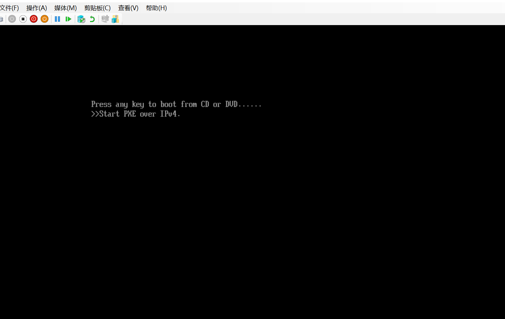
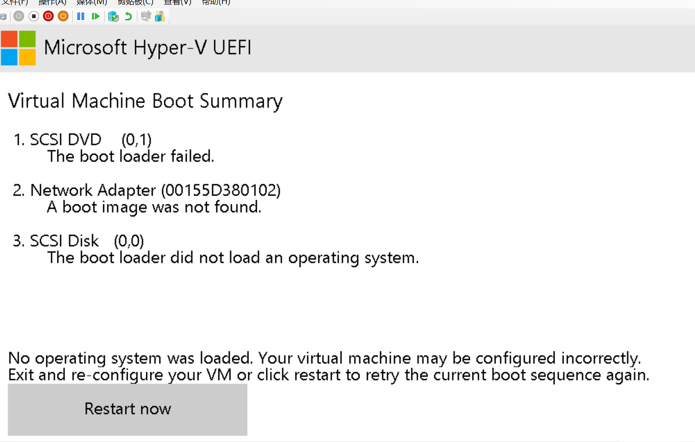

ISE14.7 在各平台安装简单指导
GNG not Gua & 王信博， guahao@zju.edu.cn 2022.9.13
Updated on 2023.10.24
本班同学不需要查看这个指导。仓促转载，如有问题请邮箱或 98 站短联系。
在《数字逻辑设计》与《计算机逻辑》课程实验中，需要使用到 Xilinx 公司的 ISE 开发套件。软件体积较大，请准备好足够的空间。
Windows7/Linux/Windows10
注意：安装路径中不要有中文。如果 Windows 用户名为中文，建议安装在非系统盘（大部分人系统盘为 C 盘符）中。
可观看附件中的“安装 .mp4”完成安装，不需要阅读本文（下载时请使用 support/downloads）。
下载
在官网的 support/downloads 中下载 ISE14.7（注意，不是 ISE14.7 Windows10），需要将四个分包都进行下载。（Windows10 的同学也可以尝试下载安装 ISE14.7 Windows10，如果你暂时不需要使用 WSL） Windows10 版本使用体验比较差，不建议使用。
安装
安装选项请见附件“安装 .mp4”。License 已作为附件发出。
Windows10 用户在安装完成后（可以正常打开 ISE 界面）需要进行额外的操作 ( 参考这个网页 )：
- 进入目录
<install_path>\Xilinx\14.7\ISE_DS\ISE\lib\nt64\ - 找到文件
libPortability.dll并将其重命名为libPortability.dll.orig进行备份 - 在当前目录下找到
libPortabilityNOSH.dll并复制到本目录，将副本重命名为libPortability.dll - 在目录
<install_path>\Xilinx\14.7\ISE_DS\common\lib\nt64\重复上述操作
可能遇到的问题与解决方案
找不到 libPortabilityNOSH.dll
下载后解压的内容中并没有这一 dll，需要先完成安装，才会在安装路径下找到 libPortabilityNOSH.dll。
License Load 闪退
参考这篇博客，进入目录 <install_path>\Xilinx\14.7\ISE_DS\common\bin\nt\，找到 xlcm.exe装载 license，请注意，是 xlcm.exe 而不是 _xlcm.exe。或使用 32 位打开 ISE，右键快捷方式，选择属性，在属性中修改目标为：gs32.bat <install_path>\Xilinx\14.7\ISE_DS\ISE。
打开后应用名“Clip Host”
可能是安装路径中存在中文字符，请修改路径中的中文字符为英文字符。
Windows11
总的来说，目前 Windows11 上只有运行虚拟机（Windows10/Linux）并在虚拟机上安装和运行 ISE 这一条途径。其中有：直接运行官网 Windows10 版本，在 WSL 上安装和使用 ISE，在 Hyper-V 虚拟机平台上运行 Windows10 操作系统 这几种途径。其中前两类实际为在 Linux 下运行，后一种在 Windows10 下运行。
从实践上看，前两种方式在安装驱动上存在问题，目前仍未找到直接下板的方式，可能需要在本地完成项目后在机房电脑上进行下板。推荐使用最后一种方式，这一类方式的缺点是安装比较麻烦，配置环节较多，但是可以直接通过本地进行下板。 具体安装方式见文档，感谢王信博同学进行安装实践并协助我进行功能测试以及书写这一文档🎉。
可能遇到的问题与解决方案
安装系统
创建虚拟机后要在虚拟机上安装 Windows10 系统，你可能会遇到以下界面：

如果你按键没有反应的话，请稍等一段时间，它会变为下边这一界面：

使用 TAB 键 选中按钮“Restart now”，选中后会有虚线框，这时按回车键（enter）。进入黑色的界面，提示键入任何值，你可以再次按回车。你将进入安装界面，根据需求进行安装即可。
虚拟机中鼠标 / 键盘无法使用
- 在 Hyper-V 管理器主界面右侧的“操作”下选择“Hype-V 设置”。
- 在弹出的对话框中选择“用户”-“鼠标释放键”，在右侧窗口选择可用的快捷键。 如果在窗口模式下进行操作不是很方便，可以在“菜单”下选择“全屏模式”（Ctrl+Alt+Pause）；进入全屏模式后，可以通过链接栏上方还原窗口按钮回到窗口模式。 ⬆ 以上方法疑似每次打开都要进行设置，如果有更好的方式欢迎提出。
如果你有更好的方式，欢迎联系 guahao@zju.edu.cn 感谢您的建议！